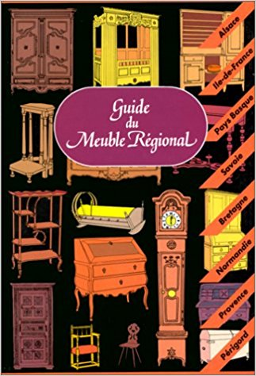

Références bibliographiques

Gwénaël Baron, Menuisiers et mobilier du pays de Rennes, Rennes, Editions Apogée, 1997.
Page 102 (n°17)
Jean Jambon, Les beaux meubles rustiques du vieux Pays de Rennes, Rennes, Plihon et Hommay, 1927.
Planche 43

Paul Banéat, Le mobilier breton, Paris, C. Massin, 1949.
Planche 17

Yves Gairaud et Françoise de Perthuis, Guide du Mobilier Régional, Paris Editions Hervas, 1999.
Page 142